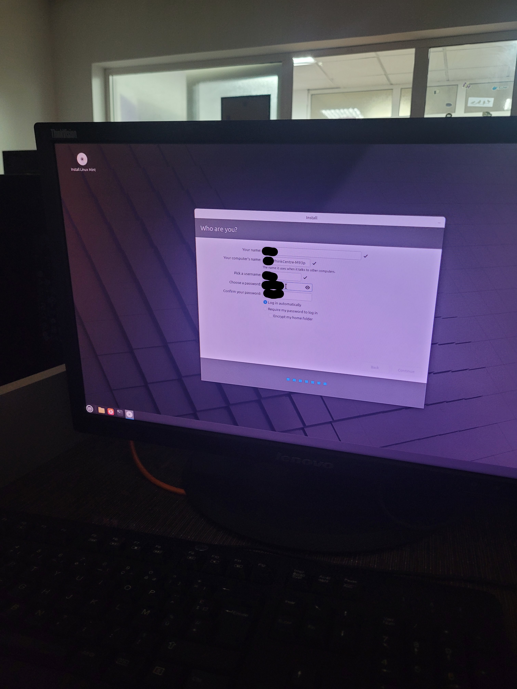

Me and a teacher were really working on the computers migrating them to Linux that evening, I was handling the installation of the computers and the teacher was handling the installation of the custom VSCode, several hours later, we were finished with our installation for both the OS and the custom VSCode and now we were going to do a quick check up to see if everything is in working order and then leave, but Unfortunately not everything goes according to plan, turns out after the installation VSCode only launches once and after you close it, it refuses to launch anymore I looked into btop to see if there are any hidden processes that didn't close properly but there was nothing, I tried running it with sudo to see if maybe it's just the privileges it printed something about running it without sandboxing is not allowed or something, it was getting late, like 11PM late we decided to call it a day and the teacher called the principal to let him know about the problem, I decided to try to figure it out and fix it tomorrow early and not come late like today. 